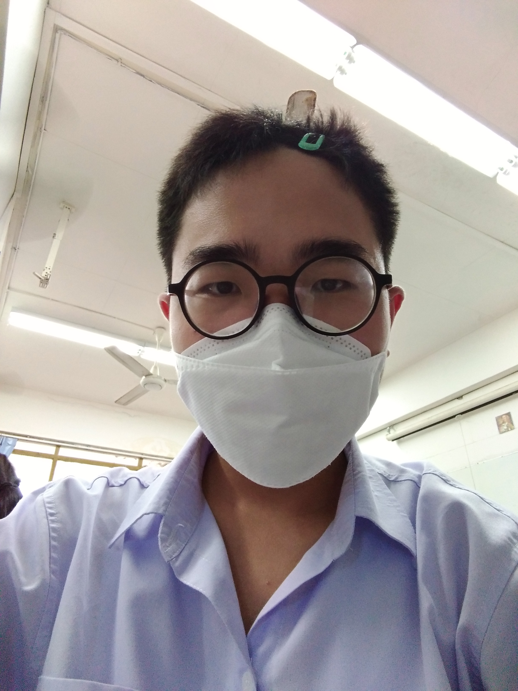
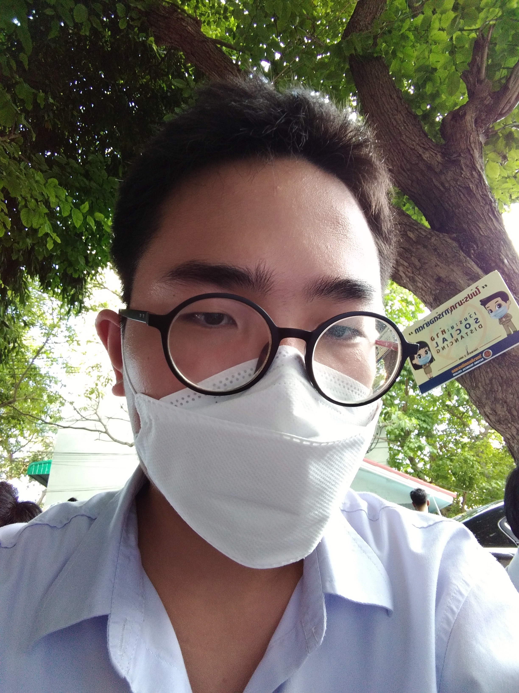

"ข้อมูลส่วนตัว"
ประวัติส่วนตัว
สวัสดีครับนายตรีสรณ์ เอื้อศิลามงคล เกิดเมื่อวันที่ 27 มิถุนายน พ.ศ.2549
อยู่ตำบลทับมา อำเภอเมืองระยอง จังหวัดระยอง
| ประเภท |
สิ่งที่ชอบ |
สิ่งที่ไม่ชอบ |
| ประเภทของเพื่อน |
คนที่เป็นห่วงเป็นใย |
คนที่ชอบรังแกคนอื่น |
|
| ของกินที่ทานบ่อย |
ข้าวผัด |
พิซซ่า |
|
| สัตว์ที่ชอบเลี้ยง |
ปลาหางนกยูง |
สุนัข |
|
| สถานที่โปรด |
สวนสาธารณะ |
ซอกซอยแคบๆ |
|


คำคมประจำใจ
ชีวิตของเรานั้นดีหรือแย่ขึ้นอยู่กับการตัดสินใจของตัวเรา
เพลงที่ชอบฟัง:วาฬเกยตื้น-GUNGUN